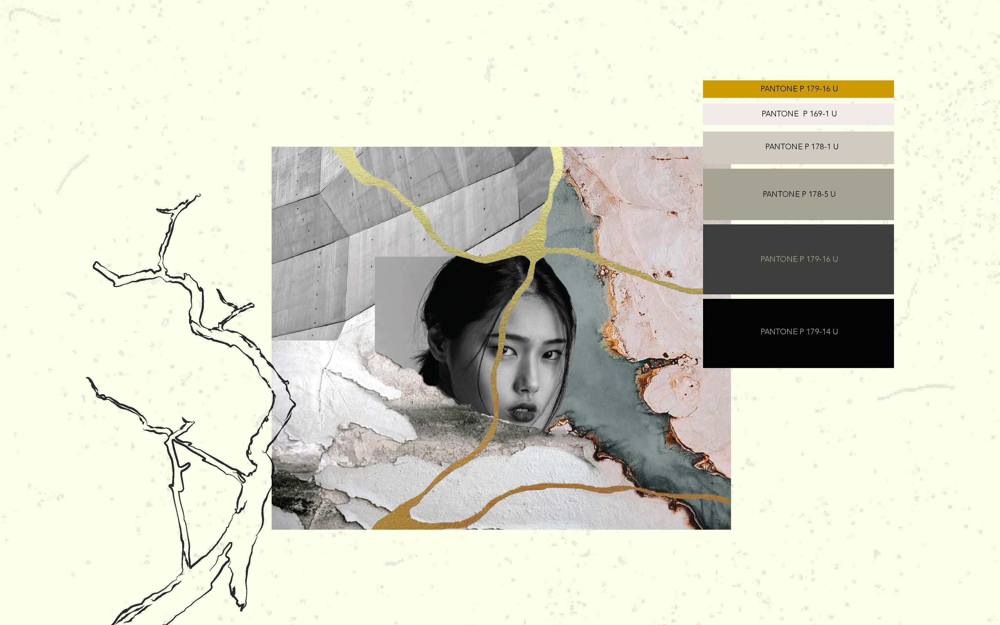
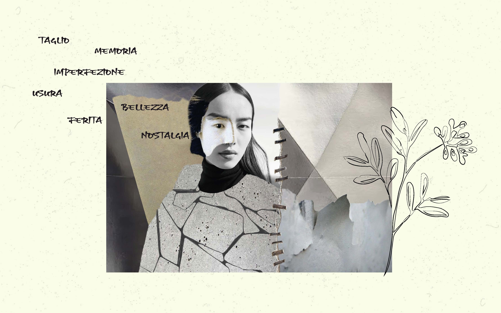

Within a world of normative order and forced perfection, in the disordered effects of deterioration lies a fragile beauty. In its unstoppable flow, time reverberates in objects. Its perpetual action does not necessarily cause ugliness, nor does it make the objects it touches corrupt. It creates alternative aesthetic properties. Foretelling of future eventualities, the signs of decay modify the physiognomy and the nature of matter. The fabric fades, loses density, stains and thins. It becomes impalpable and fragile, shadow of itself. These modifications of materiality evoke images of a past that will never return and, at the same time, prophetic visions of the changes to come. The ghosts of the archetype inhabit these materials, vague memories of splendor. But it is in the chaotic manifestation of decay that these materials carve out a place in the world. The status of a ruined object is in fact transitory. Poised between becoming something else or being transformed into nothingness, they struggle in their precarious condition.
 